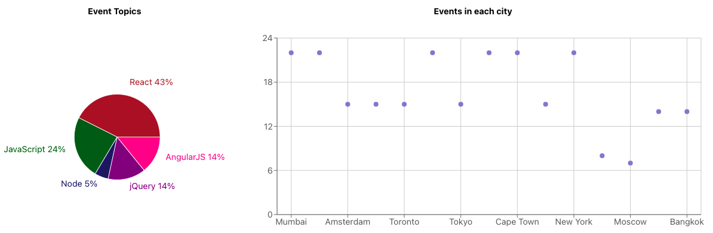

Meet App is a serverless, single page, progressive web application that gives users the inside track to the happenings in their city and around the world.
Users can search events by city and limit the number of events displayed. Event elements can be expanded to reveal more information. The app boasts lightning-fast performance after it is loaded.
Desktop users can enjoy Data Visualization of the distribution of events and topics, built with ReCharts.
The app was built with React, using the test-driven development (TDD) method. It uses AWS as its "serverless" server and gathers data from the Google Calendar API.
I developed the app by writing Jest Unit and Integration tests first, and then writing the App's code to pass the tests. While this was challenging, I learned a great deal about writing effective tests and asynchronous behavior.
The app is continuously monitored by Atatus.
This is a Progressive Web Application (PWA) that can run online or offline, and can be installed as a standalone app.
I used Object Oriented Programming (OOP) in JavaScript to design colored Alerts that appear to help the user navigate the site. See if you can find all four alerts!
I came a long way as a programmer while creating Meet App. I feel more in command of React, having completed two React projects. Testing was a real challenge! I hope you enjoy exploring Meet App.
Nota Bene: The Meet App link above requires authorization to access. Please Contact Me if you would like to be authorized.
Want to Learn More? Check out my DETAILED CASE STUDY about this project. (PDF Format)
⬅️ Back to Projects